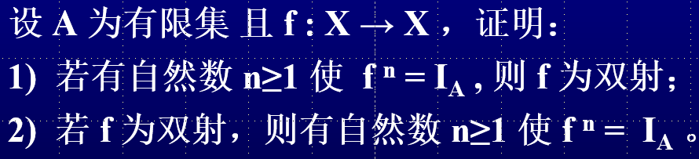

离散数学-函数
本文最后更新于 2024年11月15日 上午
部分函数
如果从集合X到Y的二元关系f是"单值"的,即f满足以下条件:
若\(<x,y_1>\in f\wedge <x,y_2>\in f,则y_1=y_2\)
f为X到Y的部分函数
从X到Y的函数个数:\(\#(Y^X)=(\#Y)^{\#X}\)
定义域
\(dom(f)=\{x\in X|y\in Y使得y=f(x)\}\)
若\(x \in dom(f)\),则f在x处有定义,记为\(f(x)\downarrow\),否则称f在x处无定义,\(f(x)\uparrow\),显然\(dom(f)\subseteq X\)
- \(若\text{dom}(f)=X,则记f为X到Y的全函数,f为X到Y的函数,记作f:X\rightarrow Y\)
- \(若\text{dom}(f)\subset X,则称f为X到Y的严格部分函数\)
- \(若\text{ran}(f)=Y,则称f为X到Y上的部分函数\)
- \(若\text{ran}(f)\subset Y,则称f为X到Y内的部分函数\)
- 若对任意\(x_1,x_2\in \text{dom}(f),当x_1\neq x_2时,皆有f(x_1)\neq f(x_2)\)
限制
设函数\(f:X\rightarrow Y,A\subseteq X\),则\(f\cap (A\times Y)\)是从A到Y的函数,则称f在A上的限制,记作\(f|_A\),又称\(f\)是\(f_A\)到X的延拓
\(f|_A=\{<x,y>|<x,y>\in F\wedge x\in A\}\)
定理
\(1)f|U(A)|=U\{f[A]|A\in A\}\)
\(任取y\in f[U\mathscr A],\therefore \exists x\in \cup \mathscr A使得f(x)=y\\\)
\(\exists A\in\mathscr A,x\in A\therefore y\in f(A),\therefore y\in \cup\{f[A]|A\in\mathscr A\},\therefore f[\cup\mathscr A]\subseteq \cup\{f[A]|A\in\mathscr A\}\)
\(任取A\in\mathscr A,A\subseteq \cup \mathscr A,f[A]\subseteq f[U\mathscr A]\)
\(\cup \{f[A]|A\in A\}\subseteq f[\cup\mathscr A]\)
4)\(B=\emptyset,f^{-1}[\cap \mathscr B]=\cap\{f^{-1}[B]|B\in\mathscr B\}\)
定理
若f为从集合X到Y的部分函数且\(A\subseteq X\),则:
\(dom(f|_A)=A\cap dom\ f\)
\(ran(f|_A)=f[A]\)
若\(A\subseteq dom(f)\),则\(f|_A\)为全函数
思考题
函数的复合
\(g\cdot f\)定义为:
\(\{<x,z>|x\in X\wedge z\in Z\wedge \exists y(y\in Y\wedge y=f(x)\wedge z=g(y))\}\)
定理1
1)\(dom(g\cdot f)=f^{-1}[dom g]\)
2)\(ran(g\cdot f)=g[ranf]\)
3)若f,g都是全函数,\(g\cdot f\)也是全函数
定理2
\(h\cdot(g\cdot f)=(h\cdot g)\cdot f\)
特殊性质的函数与逆函数
自然映射
\(\phi=\{<x,[x]_R>|x\in A\}\)
定理
\(若g\cdot f是满射,则g是满射\)
\(1)ran\ g\subseteq Z,g[ran\ f]=g[Y]=ran\ g\)
\(g[ran\ f]=ran(g\cdot f)\)
\(由于g\cdot\ f为满射,ran(g\cdot f)=Z\)
\(\therefore Z\subseteq ran\ g\)
\(\therefore Z=ran\ g\),即g为满射
2)\(g\cdot f是单射,则f是单射\)
3)\(若g\cdot f是双射,则g是满射且f是单射\)
左满右单
思考题
a)有多少个从A到B的函数为单射？
① 当 m \(\leq\)n时，有\(p^m_n=\frac{n!}{(n-m)!}\)个单射；
② 当 m > n时，有0个单射
有多少个从A到B的函数为 满射？
① 当 m < n时，有 0 个满射；
② 当 n = 0且m > 0 时，0个；
③ 当 n = 0且m = 0时， 1个；
④ 当 m \(\geq\)n \(\geq\) 1时，为第二类Stirling数：
\(F(n,m)=\mathop\Sigma\limits^m_{i=0}\frac{(-1)^{m-i}i^n}{i!(m-i)!}\)
第二类斯特林数
\(S(n,m)=S(n-1,m-1)+S(n-1,m)*m\)
\[ \begin{align}&G_i=i^n\\&G_i=\mathop\Sigma_{j=0}^iC^i_jF_j\\&F_i=\mathop\Sigma_{j=0}^i(-1)^{i-j}C^i_jG_j\\&=\mathop\Sigma^i_{j=0}\frac{i!(-1)^{i-j}j^n}{j!(i-j)!}\\&S(n,m)=\frac{F_m}{m!}=\mathop\Sigma_{i=o}^m\frac{(-1)^{m-i}i^n}{i!(m-i)!}\end{align} \]
逆函数
\(1)若有g:Y\rightarrow X使得g\cdot f=I_X,则称f为左可逆的,\\并称g为f的一个左逆函数\)
\(2)若有g:Y\rightarrow X使得f\cdot g=I_Y,则称f为左可逆的,\\并称g为f的一个右逆函数\)
可逆判定
\(f:X\rightarrow Y为左可逆的\leftrightarrow f为单射\)
\(证明:(充分性)\exists g:Y\rightarrow X,使得g\cdot f=I_X\)
\(I_X是满射,则f是单射\)
\((必要性)由于f是单射,存在g=f^{-1}\cup ((Y-ran\ f)\times \{a\}),使得g\cdot f=I_X\)
\(f:X\rightarrow Y是右可逆的\leftrightarrow f为满射\)
\(\begin{align}证明:&\exists g:Y\rightarrow X使得 f\cdot g=I_Y\\&由于I_A是双射,f为满射\\&(必要性)设f为满射,\\&i)X=\emptyset,f为满射,Y=ran\ f=\emptyset,定理显然成立\\&ii)X\neq\emptyset,对于每个有y\in Y,令\\&S_y=\{x|x\in X\wedge f(x)=y\}\\&\{S_y|y\in Y\}是X的一个划分,对于每个y\in Y,都任意取定S_y中唯一的一个元素x_y,显然f(x_y)=y,并令\\&g=\{<y,x_y>|y\in Y\}\\&则g显然是一个从Y到X的全函数,且f\cdot g=I_Y\end{align}\)
可逆性质
以下条件等价:
- f是双射
- f是可逆的
- f的逆关系\(f^{-1}\)即为f的逆函数
定理
\(f:X\rightarrow Y,g:Y\rightarrow Z都是可逆的\)
\(则g\cdot f也是可逆的,且(g\cdot f)^{-1}=f^{-1}\cdot g^{-1}\)
思考题
 \[ \begin{align} &n=1时,f=I_A,则f为双射\\ &n>1时,\\ &f^n=f\cdot f^{n-1}=I_A,故f为满射\\ &f^n=f^{n-1}\cdot f=I_A,故f为单射\\ &因此f为双射 \end{align} \]
\[ \begin{align} &设n(A)=m,则双射最大数量为m!\\ &存在0\leq i<j\leq m!,使得f^i=f^j\\ &因此f^{i}\cdot (f^i)^{-1}=f^k\cdot (f^i)^{-1}\\ &f^{k-i}=I_A\\ \end{align} \]
集合的特征函数
\(设U是全集,A是U的子集,A的特征函数\Phi_A:U\rightarrow \{0,1\}\\\Phi_A(x)=\begin{cases}1,x\in A\\0,x\notin A\end{cases}\)
性质
\(\forall x(\Phi_A(x)=0)\Leftrightarrow A=\emptyset\)
\(\forall x(\Phi_A(x)=1)\Leftrightarrow A=U\)
\(\forall x(\Phi_A(x)\leq \Phi_B(x))\Leftrightarrow A\subseteq B\)
\(\forall x(\Phi_A(x)=\Phi_B(x))\Leftrightarrow A=B\)